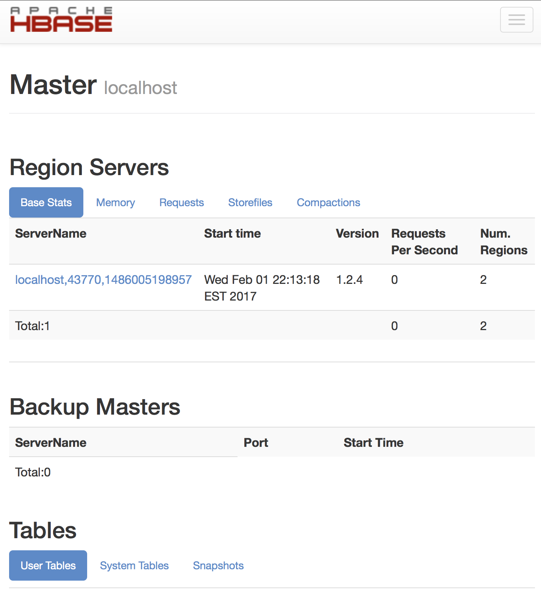

<!DOCTYPE html PUBLIC "-//W3C//DTD XHTML 1.0 Transitional//EN"
  "http://www.w3.org/TR/xhtml1/DTD/xhtml1-transitional.dtd">


<html xmlns="http://www.w3.org/1999/xhtml">
  <head>
    <meta http-equiv="Content-Type" content="text/html; charset=utf-8" />
    
    <title>Week 3 Hbase &#8212; Week 3 1.0 documentation</title>
    
    <link rel="stylesheet" href="../_static/sphinxdoc.css" type="text/css" />
    <link rel="stylesheet" href="../_static/pygments.css" type="text/css" />
    
    <script type="text/javascript">
      var DOCUMENTATION_OPTIONS = {
        URL_ROOT:    '../',
        VERSION:     '1.0',
        COLLAPSE_INDEX: false,
        FILE_SUFFIX: '.html',
        HAS_SOURCE:  true,
        SOURCELINK_SUFFIX: '.txt'
      };
    </script>
    <script type="text/javascript" src="../_static/jquery.js"></script>
    <script type="text/javascript" src="../_static/underscore.js"></script>
    <script type="text/javascript" src="../_static/doctools.js"></script>
    <script type="text/javascript" src="https://cdn.mathjax.org/mathjax/latest/MathJax.js?config=TeX-AMS-MML_HTMLorMML"></script>
    <link rel="index" title="Index" href="../genindex.html" />
    <link rel="search" title="Search" href="../search.html" />
    <link rel="next" title="Week4 HIVE" href="week4hive.html" />
    <link rel="prev" title="Homework 2: Installing Hadoop on a Cluster" href="week2hadoop_cluster.html" /> 
  </head>
  <body role="document">
    <div class="related" role="navigation" aria-label="related navigation">
      <h3>Navigation</h3>
      <ul>
        <li class="right" style="margin-right: 10px">
          <a href="../genindex.html" title="General Index"
             accesskey="I">index</a></li>
        <li class="right" >
          <a href="week4hive.html" title="Week4 HIVE"
             accesskey="N">next</a> |</li>
        <li class="right" >
          <a href="week2hadoop_cluster.html" title="Homework 2: Installing Hadoop on a Cluster"
             accesskey="P">previous</a> |</li>
        <li class="nav-item nav-item-0"><a href="../index.html">Week 3 1.0 documentation</a> &#187;</li>
          <li class="nav-item nav-item-1"><a href="index.html" accesskey="U">Data Science at Regis University!</a> &#187;</li> 
      </ul>
    </div>
      <div class="sphinxsidebar" role="navigation" aria-label="main navigation">
        <div class="sphinxsidebarwrapper">
  <h3><a href="../index.html">Table Of Contents</a></h3>
  <ul>
<li><a class="reference internal" href="#">Week 3 Hbase</a><ul>
<li><a class="reference internal" href="#new-vm">New VM</a></li>
<li><a class="reference internal" href="#installing-hbase">Installing hbase</a></li>
<li><a class="reference internal" href="#the-following-commands-can-be-used-with-hbase">The following commands can be used with HBase</a></li>
<li><a class="reference internal" href="#stopping-hbase">Stopping Hbase</a></li>
</ul>
</li>
</ul>

  <h4>Previous topic</h4>
  <p class="topless"><a href="week2hadoop_cluster.html"
                        title="previous chapter">Homework 2: Installing Hadoop on a Cluster</a></p>
  <h4>Next topic</h4>
  <p class="topless"><a href="week4hive.html"
                        title="next chapter">Week4 HIVE</a></p>
  <div role="note" aria-label="source link">
    <h3>This Page</h3>
    <ul class="this-page-menu">
      <li><a href="../_sources/dataEngineering/week3hbase.rst.txt"
            rel="nofollow">Show Source</a></li>
    </ul>
   </div>
<div id="searchbox" style="display: none" role="search">
  <h3>Quick search</h3>
    <form class="search" action="../search.html" method="get">
      <div><input type="text" name="q" /></div>
      <div><input type="submit" value="Go" /></div>
      <input type="hidden" name="check_keywords" value="yes" />
      <input type="hidden" name="area" value="default" />
    </form>
</div>
<script type="text/javascript">$('#searchbox').show(0);</script>
        </div>
      </div>

    <div class="document">
      <div class="documentwrapper">
        <div class="bodywrapper">
          <div class="body" role="main">
            
  <div class="section" id="week-3-hbase">
<h1>Week 3 Hbase<a class="headerlink" href="#week-3-hbase" title="Permalink to this headline">¶</a></h1>
<p>by Josh Peterson (created on Sphinx)</p>
<p>The goal of this week is to install, configure, and test HBase.  This will be accomplished by following section B.4 direction on the Apached HBase Reference Guide FAQ and the complete the activites described under - procedure: Download, Configure, and Start HBase in Standalone Mode.</p>
<p>This was accomplished by first:</p>
<ul class="simple">
<li>creating a new VM for the assignment</li>
<li>create a user for Hbase and the installation.</li>
</ul>
<div class="section" id="new-vm">
<h2>New VM<a class="headerlink" href="#new-vm" title="Permalink to this headline">¶</a></h2>
<p>The same steps for creating the new VM for other other projects was followed.  This includes installing CentOS minimual on VMFussionWare and then determining the ip address with the command</p>
<div class="highlight-default"><div class="highlight"><pre><span></span><span class="n">ip</span> <span class="n">addr</span>
</pre></div>
</div>
<p>I then use <strong>iterm2</strong> to log into the node and do the following</p>
<p>The ip address for the machines was the following:</p>
<div class="highlight-default"><div class="highlight"><pre><span></span><span class="mf">192.168</span><span class="o">.</span><span class="mf">112.133</span>
</pre></div>
</div>
<p>I then used <strong>item2</strong> to ssh into the node. Then on the node I updated them using the following commands:</p>
<div class="highlight-default"><div class="highlight"><pre><span></span><span class="n">su</span>
<span class="n">yum</span> <span class="n">update</span>
<span class="n">yum</span> <span class="n">provides</span> <span class="n">wget</span>
<span class="n">yum</span> <span class="n">install</span> <span class="n">wget</span>
</pre></div>
</div>
<p>I then created hbase user (on each of the node):</p>
<div class="highlight-default"><div class="highlight"><pre><span></span><span class="n">useradd</span> <span class="n">hbase</span>
<span class="n">passwd</span> <span class="n">hbase</span>
</pre></div>
</div>
<p>The next step is to install java on the machines by doing the following:</p>
<div class="highlight-default"><div class="highlight"><pre><span></span>cd /opt
wget --no-cookies --no-check-certificate --header &quot;Cookie: gpw_e24=http%3A%2F%2Fwww.oracle.com%2F; oraclelicense=accept-securebackup-cookie&quot; http://download.oracle.com/otn-pub/java/jdk/8u111-b14/jdk-8u111-linux-x64.tar.gz
tar xzf jdk-8u111-linux-x64.tar.gz
chown R root:root jdk1.8.0_111
alternatives --install /usr/bin/java java /opt/jdk1.8.0_111/bin/java 2
alternatives --config java
alternatives --install /usr/bin/jar jar /opt/jdk1.8.0_111/bin/jar 2
alternatives --install /usr/bin/javac javac /opt/jdk1.8.0_111/bin/javac 2
alternatives --set jar /opt/jdk1.8.0_111/bin/jar
alternatives --set javac /opt/jdk1.8.0_111/bin/javac
</pre></div>
</div>
<p>Now I exited root user and switched to the hadoop user:</p>
<div class="highlight-default"><div class="highlight"><pre><span></span><span class="n">exit</span>
<span class="n">su</span> <span class="o">-</span> <span class="n">hbase</span>
</pre></div>
</div>
<p>Then I <em>vi</em> into the .bashrc on the node and added the following to the end of the .bashrc file:</p>
<div class="highlight-default"><div class="highlight"><pre><span></span>export JAVA_HOME=/opt/jdk1.8.0_111
export JRE_HOME=/opt/jdk1.8.0_111/jre
export PATH=$PATH:$JAVA_HOME/bin
</pre></div>
</div>
</div>
<div class="section" id="installing-hbase">
<h2>Installing hbase<a class="headerlink" href="#installing-hbase" title="Permalink to this headline">¶</a></h2>
<p>Just like the java code hadoop can be downloaded onto the manager node and then coped to the other nodes /opt location.  This is accomplished with the command:</p>
<div class="highlight-default"><div class="highlight"><pre><span></span><span class="n">su</span> <span class="o">-</span> <span class="n">hbase</span>
<span class="n">wget</span> <span class="n">http</span><span class="p">:</span><span class="o">//</span><span class="n">mirror</span><span class="o">.</span><span class="n">synyx</span><span class="o">.</span><span class="n">de</span><span class="o">/</span><span class="n">apache</span><span class="o">/</span><span class="n">hbase</span><span class="o">/</span><span class="n">stable</span><span class="o">/</span><span class="n">hbase</span><span class="o">-</span><span class="mf">1.2</span><span class="o">.</span><span class="mi">4</span><span class="o">-</span><span class="nb">bin</span><span class="o">.</span><span class="n">tar</span><span class="o">.</span><span class="n">gz</span>
<span class="n">tar</span> <span class="n">xzvf</span> <span class="n">hbase</span><span class="o">-</span><span class="mf">1.2</span><span class="o">.</span><span class="mi">4</span><span class="o">-</span><span class="nb">bin</span><span class="o">.</span><span class="n">tar</span><span class="o">.</span><span class="n">gz</span>
<span class="n">cd</span> <span class="n">hbase_1</span><span class="o">.</span><span class="mf">2.4</span>
</pre></div>
</div>
<div class="admonition note">
<p class="first admonition-title">Note</p>
<p class="last">The wget command took to long so I manual downloaded the file onto my computer and then scp it to my virtual machine</p>
</div>
<p>Then I edited the <strong>conf/hbase-site.xml</strong> which is the main HBase configuration file:</p>
<div class="highlight-default"><div class="highlight"><pre><span></span><span class="o">&lt;</span><span class="n">configuration</span><span class="o">&gt;</span>
  <span class="o">&lt;</span><span class="nb">property</span><span class="o">&gt;</span>
    <span class="o">&lt;</span><span class="n">name</span><span class="o">&gt;</span><span class="n">hbase</span><span class="o">.</span><span class="n">rootdir</span><span class="o">&lt;/</span><span class="n">name</span><span class="o">&gt;</span>
    <span class="o">&lt;</span><span class="n">value</span><span class="o">&gt;</span><span class="n">file</span><span class="p">:</span><span class="o">///</span><span class="n">home</span><span class="o">/</span><span class="n">hbase</span><span class="o">/</span><span class="n">hbase</span><span class="o">&lt;/</span><span class="n">value</span><span class="o">&gt;</span>
  <span class="o">&lt;/</span><span class="nb">property</span><span class="o">&gt;</span>
  <span class="o">&lt;</span><span class="nb">property</span><span class="o">&gt;</span>
    <span class="o">&lt;</span><span class="n">name</span><span class="o">&gt;</span><span class="n">hbase</span><span class="o">.</span><span class="n">zookeeper</span><span class="o">.</span><span class="n">property</span><span class="o">.</span><span class="n">dataDir</span><span class="o">&lt;/</span><span class="n">name</span><span class="o">&gt;</span>
    <span class="o">&lt;</span><span class="n">value</span><span class="o">&gt;/</span><span class="n">home</span><span class="o">/</span><span class="n">hbase</span><span class="o">/</span><span class="n">zookeeper</span><span class="o">&lt;/</span><span class="n">value</span><span class="o">&gt;</span>
  <span class="o">&lt;/</span><span class="nb">property</span><span class="o">&gt;</span>
<span class="o">&lt;/</span><span class="n">configuration</span><span class="o">&gt;</span>
</pre></div>
</div>
<p>Then i ran the command below to startup hbase:</p>
<div class="highlight-default"><div class="highlight"><pre><span></span><span class="nb">bin</span><span class="o">/</span><span class="n">start</span><span class="o">-</span><span class="n">hbase</span><span class="o">.</span><span class="n">sh</span>
</pre></div>
</div>
<p>When running start-hbase.sh the output is</p>
<div class="highlight-default"><div class="highlight"><pre><span></span>[hbase@localhost hbase-1.2.4]$ bin/start-hbase.sh
starting master, logging to /home/hbase/hbase-1.2.4/bin/../logs/hbase-hbase-master-localhost.localdomain.out
Java HotSpot(TM) 64-Bit Server VM warning: ignoring option PermSize=128m; support was removed in 8.0
Java HotSpot(TM) 64-Bit Server VM warning: ignoring option MaxPermSize=128m; support was removed in 8.0
</pre></div>
</div>
<p>You can use the command <strong>jps</strong> to view that it is running:</p>
<div class="highlight-default"><div class="highlight"><pre><span></span>[hbase@localhost hbase-1.2.4]$ jps
36864 HMaster
37185 Jps
</pre></div>
</div>
<p>Also you can view <a class="reference external" href="http://192.168.112.133:16010">http://192.168.112.133:16010</a> to view the HBase Web UI.</p>
<div class="admonition note">
<p class="first admonition-title">Note</p>
<p class="last">To view the HBASe remotely I turned off the firewall using the command &#8221;    systemctl stop firewalld&#8221;</p>
</div>
<p>The view of the HBase Web user interface can be seen below:</p>

</div>
<div class="section" id="the-following-commands-can-be-used-with-hbase">
<h2>The following commands can be used with HBase<a class="headerlink" href="#the-following-commands-can-be-used-with-hbase" title="Permalink to this headline">¶</a></h2>
<ol class="arabic">
<li><p class="first">Connect to HBase</p>
<div class="highlight-default"><div class="highlight"><pre><span></span>./bin/hbase shell
[hbase@localhost hbase-1.2.4]$ bin/hbase shell
2017-02-01 22:25:43,823 WARN  [main] util.NativeCodeLoader: Unable to load native-hadoop library for your platform... using builtin-java classes where applicable
HBase Shell; enter &#39;help&lt;RETURN&gt;&#39; for list of supported commands.
Type &quot;exit&lt;RETURN&gt;&quot; to leave the HBase Shell
Version 1.2.4, r67592f3d062743907f8c5ae00dbbe1ae4f69e5af, Tue Oct 25 18:10:20 CDT 2016
</pre></div>
</div>
</li>
<li><p class="first">Display help:</p>
<div class="highlight-default"><div class="highlight"><pre><span></span><span class="n">help</span>
</pre></div>
</div>
</li>
<li><p class="first">Create table (To do this I need to specify name and column family name):</p>
<div class="highlight-default"><div class="highlight"><pre><span></span><span class="n">create</span> <span class="s2">&quot;homework3&quot;</span><span class="p">,</span> <span class="s2">&quot;cf&quot;</span>

<span class="mi">0</span> <span class="n">row</span><span class="p">(</span><span class="n">s</span><span class="p">)</span> <span class="ow">in</span> <span class="mf">1.6330</span> <span class="n">seconds</span>
<span class="o">=&gt;</span> <span class="n">Hbase</span><span class="p">::</span><span class="n">Table</span> <span class="o">-</span> <span class="n">homework3</span>
</pre></div>
</div>
</li>
<li><p class="first">List Information:</p>
<div class="highlight-default"><div class="highlight"><pre><span></span><span class="nb">list</span> <span class="s1">&#39;homework3&#39;</span>

<span class="n">hbase</span><span class="p">(</span><span class="n">main</span><span class="p">):</span><span class="mi">003</span><span class="p">:</span><span class="mi">0</span><span class="o">&gt;</span> <span class="nb">list</span> <span class="s2">&quot;homework3&quot;</span>
<span class="n">TABLE</span>
<span class="n">homework3</span>
<span class="mi">1</span> <span class="n">row</span><span class="p">(</span><span class="n">s</span><span class="p">)</span> <span class="ow">in</span> <span class="mf">0.0290</span> <span class="n">seconds</span>

<span class="o">=&gt;</span> <span class="p">[</span><span class="s2">&quot;homework3&quot;</span><span class="p">]</span>
</pre></div>
</div>
</li>
<li><p class="first">Put data into my table:</p>
<div class="highlight-default"><div class="highlight"><pre><span></span><span class="n">put</span> <span class="s1">&#39;homework3&#39;</span><span class="p">,</span> <span class="s1">&#39;row1&#39;</span><span class="p">,</span> <span class="s1">&#39;cf:a&#39;</span><span class="p">,</span> <span class="s1">&#39;100&#39;</span>
<span class="n">put</span> <span class="s1">&#39;homework3&#39;</span><span class="p">,</span> <span class="s1">&#39;row2&#39;</span><span class="p">,</span> <span class="s1">&#39;cf:b&#39;</span><span class="p">,</span> <span class="s1">&#39;100&#39;</span>
<span class="n">put</span> <span class="s1">&#39;homework3&#39;</span><span class="p">,</span> <span class="s1">&#39;row3&#39;</span><span class="p">,</span> <span class="s1">&#39;cf:c&#39;</span><span class="p">,</span> <span class="s1">&#39;100&#39;</span>
</pre></div>
</div>
</li>
<li><p class="first">Scan data for all data at once:</p>
<div class="highlight-default"><div class="highlight"><pre><span></span><span class="n">scan</span> <span class="s2">&quot;homework3&quot;</span>
<span class="n">ROW</span>            <span class="n">COLUMN</span><span class="o">+</span><span class="n">CELL</span>
<span class="n">row1</span>          <span class="n">column</span><span class="o">=</span><span class="n">cf</span><span class="p">:</span><span class="n">a</span><span class="p">,</span> <span class="n">timestamp</span><span class="o">=</span><span class="mi">1486006339324</span><span class="p">,</span> <span class="n">value</span><span class="o">=</span><span class="mi">100</span>
<span class="n">row2</span>          <span class="n">column</span><span class="o">=</span><span class="n">cf</span><span class="p">:</span><span class="n">b</span><span class="p">,</span> <span class="n">timestamp</span><span class="o">=</span><span class="mi">1486006345554</span><span class="p">,</span> <span class="n">value</span><span class="o">=</span><span class="mi">100</span>
<span class="n">row3</span>          <span class="n">column</span><span class="o">=</span><span class="n">cf</span><span class="p">:</span><span class="n">c</span><span class="p">,</span> <span class="n">timestamp</span><span class="o">=</span><span class="mi">1486006346530</span><span class="p">,</span> <span class="n">value</span><span class="o">=</span><span class="mi">100</span>
<span class="mi">3</span> <span class="n">row</span><span class="p">(</span><span class="n">s</span><span class="p">)</span> <span class="ow">in</span> <span class="mf">0.0620</span> <span class="n">seconds</span>
</pre></div>
</div>
</li>
<li><p class="first">Get single row of data:</p>
<div class="highlight-default"><div class="highlight"><pre><span></span><span class="n">get</span> <span class="s2">&quot;homework3&quot;</span><span class="p">,</span> <span class="s2">&quot;row1&quot;</span>

<span class="n">COLUMN</span>         <span class="n">CELL</span>
 <span class="n">cf</span><span class="p">:</span><span class="n">a</span>          <span class="n">timestamp</span><span class="o">=</span><span class="mi">1486006339324</span><span class="p">,</span> <span class="n">value</span><span class="o">=</span><span class="mi">100</span>
<span class="mi">1</span> <span class="n">row</span><span class="p">(</span><span class="n">s</span><span class="p">)</span> <span class="ow">in</span> <span class="mf">0.0400</span> <span class="n">seconds</span>
</pre></div>
</div>
</li>
<li><p class="first">Disable a table (if you want to delete or change you first need to <em>disable</em> and you can renable with <em>enable</em>:</p>
<div class="highlight-default"><div class="highlight"><pre><span></span><span class="n">disable</span> <span class="s2">&quot;homework3&quot;</span>
<span class="n">enable</span> <span class="s2">&quot;homework3&quot;</span>
<span class="n">disable</span> <span class="s2">&quot;homework3&quot;</span>
</pre></div>
</div>
</li>
<li><p class="first">Drop a table (can only be droped after disable)</p>
<div class="highlight-default"><div class="highlight"><pre><span></span><span class="n">drop</span> <span class="s2">&quot;homework3&quot;</span>
<span class="mi">0</span> <span class="n">row</span><span class="p">(</span><span class="n">s</span><span class="p">)</span> <span class="ow">in</span> <span class="mf">1.2820</span> <span class="n">seconds</span>
</pre></div>
</div>
</li>
<li><p class="first">Exit the HBase shell:</p>
<div class="highlight-default"><div class="highlight"><pre><span></span><span class="n">quit</span>
</pre></div>
</div>
</li>
</ol>
</div>
<div class="section" id="stopping-hbase">
<h2>Stopping Hbase<a class="headerlink" href="#stopping-hbase" title="Permalink to this headline">¶</a></h2>
<p>To stop hbase use command:</p>
<div class="highlight-default"><div class="highlight"><pre><span></span><span class="o">./</span><span class="nb">bin</span><span class="o">/</span><span class="n">stop_hbase</span><span class="o">.</span><span class="n">sh</span>

<span class="n">stopping</span> <span class="n">hbase</span><span class="o">......................</span>
</pre></div>
</div>
</div>
</div>


          </div>
        </div>
      </div>
      <div class="clearer"></div>
    </div>
    <div class="related" role="navigation" aria-label="related navigation">
      <h3>Navigation</h3>
      <ul>
        <li class="right" style="margin-right: 10px">
          <a href="../genindex.html" title="General Index"
             >index</a></li>
        <li class="right" >
          <a href="week4hive.html" title="Week4 HIVE"
             >next</a> |</li>
        <li class="right" >
          <a href="week2hadoop_cluster.html" title="Homework 2: Installing Hadoop on a Cluster"
             >previous</a> |</li>
        <li class="nav-item nav-item-0"><a href="../index.html">Week 3 1.0 documentation</a> &#187;</li>
          <li class="nav-item nav-item-1"><a href="index.html" >Data Science at Regis University!</a> &#187;</li> 
      </ul>
    </div>
    <div class="footer" role="contentinfo">
        &#169; Copyright 2017, Josh Peterson.
      Created using <a href="http://sphinx-doc.org/">Sphinx</a> 1.5.3.
    </div>
  </body>
</html>